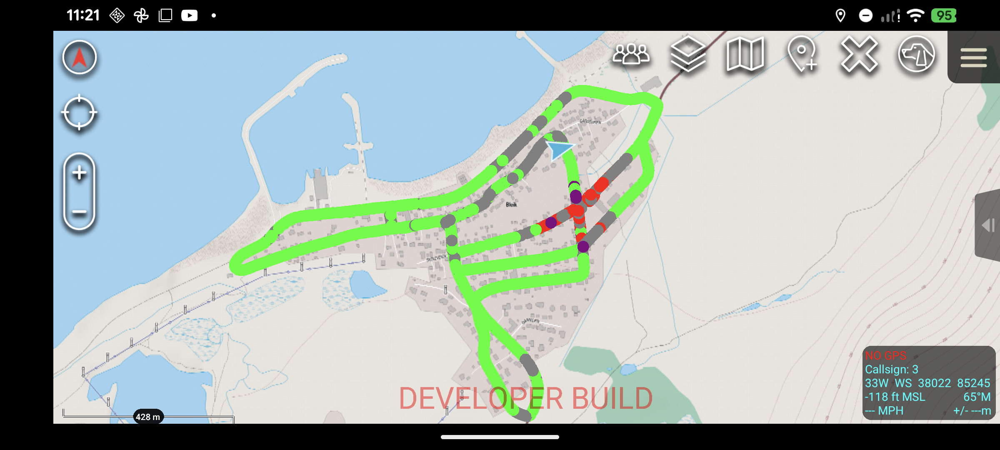
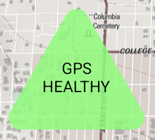
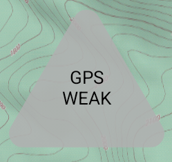
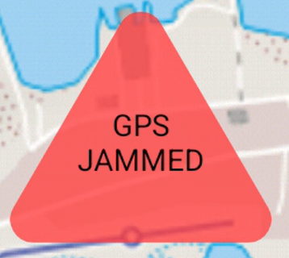
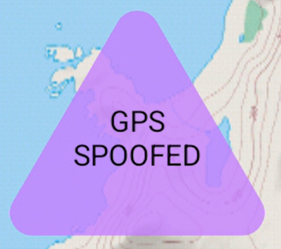
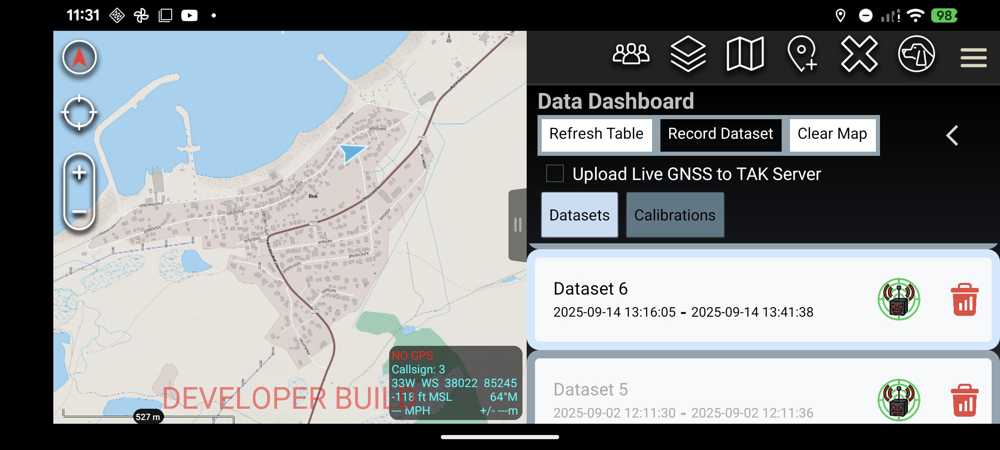
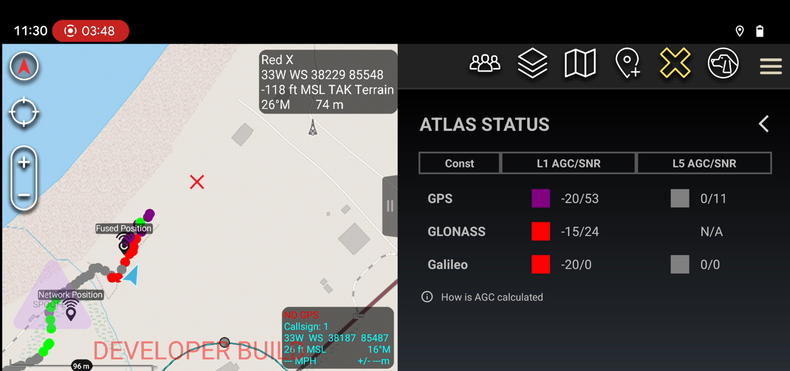

Know when your position can be trusted.
ATLAS GNSS Integrity brings real-time GPS health into TAK—helping teams recognize healthy reception, weak signal conditions, jamming, and spoofing directly on the map.
Talk to us ↗
Four signals. One clear operational picture.
Color-coded status indicators turn GNSS integrity into information that is easy to interpret in the field.

GPS reception is operating normally.

Reception is limited or unavailable.

Interference is affecting GNSS reception.

Signal behavior indicates a spoofing condition.
Map the quality of GNSS as you move.
ATLAS GNSS can plot integrity breadcrumbs along a route, preserving a visual record of GPS conditions across an area. Teams can walk or drive broad coverage patterns and use those observations to identify where interference is concentrated.
The resulting breadcrumb trail helps operators localize a jammer from field measurements—turning a changing signal environment into a spatially useful picture.

Record, revisit, and manage field datasets.
The data dashboard gives users one place to begin a recording session or access previous GNSS datasets. Historical collections can be selected for plotting when the team needs to review a past route or compare conditions.
When a dataset is no longer needed, it can also be deleted directly from the dashboard—keeping the device focused on the information that matters to the mission.
See the signals behind the status.
For a closer look, the Status Indicators page presents detailed health information for the GNSS signals available to the receiver. Operators can inspect GPS L1 and L5, Galileo E1 and E5, and GLONASS L1 when those bands are available.
This view gives the team more context when the map overlay calls attention to an integrity issue, including during a suspected spoofing event.
- GPS L1
- GPS L5 when available
- Galileo E1
- Galileo E5 when available
- GLONASS L1 when available

ATLAS Gunshot Localization↗